ソウルキャリバー４ キャラクリ バビル２世 編
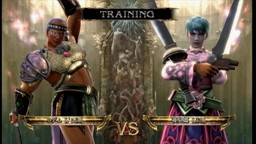
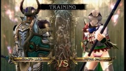
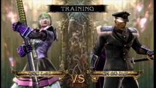
先のポセイドンのフィギュア写真を掲載したとき、あるブログで『ソウルキャリバー４』のキャラクタークリエーション(略してキャラクリ)を使った『バビル２世』と三つのしもべの画像を見つけた。ブログ等のアヴァター作成と同じくキャラクリには当然の制限があるが、その制限を超えるために独持解釈を加えることになり、これがとても新鮮だった。 最近、『ソウルキャリバー４』がダウンロード オン デマンドで手に入るようになったのをキッカケとして購入し、自分でも『バビル２世』の世界を『ソウルキャリバー４』の世界観の下に構築してみた。 ■ロデム 【L'Odim】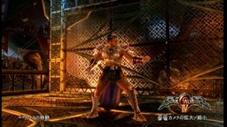
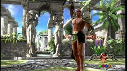
『ソウルキャリバー４』のパーツには牛ヘッドとか鹿ヘッドとかはあるが、豹ヘッドはない。それを上のブログでは、狼ヘッドにしていた。何か考える必要がある。 私は統合失調症等の経験から、名前をいろいろ置き換えて考えることに慣れたので、そこからロデムは L'Odim すなわち Le Adam なのではないかと考えた。塵から創られた大地そのものを表す人間…そう考えたとき私の心に浮かんだのは、むしろ『∀ガンダム』のロランらしき人物で、ただその後ろ姿の髪は青く、結って風にたなびいていた。それは地球という星を象徴する者だったのか…。 アダムを元型に持つキャラということで、最初に作るには縁起が良かろう…とロデムを最初にキャラクリすることにした。 ロランのように美型の若いキャラにしたいが、そういうのの顔の選択肢は一つしかない。宇宙服よりは「ロデム」であることを考えて、動物的・はじめの人類的な雰囲気があったほうがいいだろうということで、上の右の写真のようなカッコウになった。 大きな問題は髪型で、後ろで髪を結っている「ブレイズ」という髪型があるのだが、どうもイメージに合わない。いろいろやってて満足したのが、「禿げ上がり」の髪型だけだった。これだと、「ソリコミ」の部分が豹の耳のごとく見えなくもない。 どういう武器を使うかでキャラの型(流派)が決まるのだが、動きの早さとノーザンスターという武器が使えることから、シャンファ型にした。声もまじめで高めにして…とやっていると、ロランというよりは、初代ガンダムのアムロ的な感じになってしまった。 ちなみに、実用キャラとして使っているうちに他の装備が必要となって、上の左のような装備に今はなっている。 ■夜見姫 【Lilith】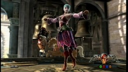
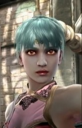
Another 創世記…を考えるとすると、アダムの次はリリスだろう…。私としては『新世紀エヴァンゲリオン』の綾波レイを早くキャラクリしたいというのもあった。リリスという名はおそらくヘブライ語のライラ(夜)から出ていると考えるが、夜…を名前に持つとすると…バビル２世ではヨミ＝夜見なのかな…。ゴロ合わせで、夜見姫にしよう…とできたのがこのキャラである。 私は旧劇場版で夢で出てきたり巨大化した綾波レイが好きという変わった人間なので、肌の色が光を通すような、虚空の闇を感じさせるような色にしたかった。衣装はむしろアスカの色である赤を基調にして、ロデムに組み入れられなかった「外的要素」を表現しようとしたら、何となくこうなった。 流派は最初、リザードマン型やナイトメア型やアスタロス型にしてみたが、それらで美女キャラをするのは決めポーズ等をするごとに心が萎え、結局、セルバンテス型に落ち着いた。 ■ロプロス 【¬＋】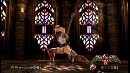
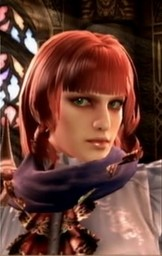
先のポセイドンでの妄想を考えると、ロプロスは人間登場以前の「知性」をも象徴しており、それは恐竜が鳥へと進化したところの秘密で表せるのではないか。名前から考えるとラプラスの魔…いや、Not Plus だろうか、それをマイナスと「自分」は言わない…。「¬＋」と書くと羽を象徴する感じも出る。最近のアニメでは空を飛ぶ…というと『ストライクウィッチーズ』のスースーする感じだろうか。…と言ったところから、作って行ったのがこのキャラである。 流派は棒使いのキリクで「鉄棒」を持たせている。上キックで「どこを見ている」と言わせるのが『けっこう仮面』みたいで気に入っている。恐竜の仮面の下の顔はむしろ気高い感じ…『∀ガンダム』のディアナ様を意識しながら、統合失調症時において私から遠い存在を象徴した赤髪のキャラにしてみた。 パーツとして、パンツが見えたままにできる甲冑腰用パーツや羽パーツもあるが、あえてそれらをつけないほうが雰囲気があると感じている。 ■ポセイドン 【False-Odin】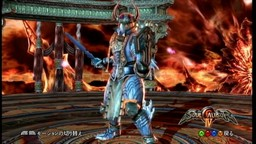
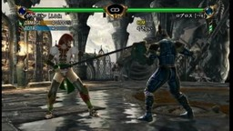
ポセイドンは「idon」の部分は神を意味する "Odin" だろう。では "Pose…" の部分は、発音が似てるのは英語だと "False" かな、それは日本語でホルスと読めるし、二つ合わせて "False-Odin" とすれば、ポセイドンにギリシア神話で最高神だった名残りがあるというのも活かせるかな。…と、この英語名にした。ただし、『ソウルキャリバー４』では、名前は 12 文字までなので、 False を記号論理で表すと「⊥」であることから「⊥Odin」を英語読みとしている。 姿はむしろ普通の神のイメージで髭ジジィにして、夜見姫と同じ「神性」を表す水色神にして、ロボットっぽく甲冑を着せた。流派をソフィーティアにしたのは、武器に先のポセイドンでの妄想を思い出させる「オリハルコン」があったから。 右の写真はトレーニングモードでロプロスと甲冑が脱げるまで戦ったところ。脱げる格闘ゲームというコンセプトがいいね(^^)。 ■初号機 【Locke】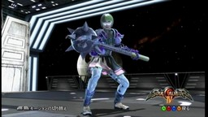
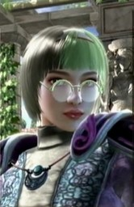
次はバビル２世本人を作るべきなんだろうけど、統合失調症時に彼のイメージはあまり私に響かなかった。その間隙を埋めたのは私の場合、『超人ロック』のイメージだった。ロックは別世界という印象が強く「この世界」に来るには依代がいる…その投影はむしろ女性で表すべきだという気がした。 ただ、ロックには緑の髪以外、服装に決まった印象はない。どうすればいいかなぁ…といろいろいじっているうちに、綾波レイのプラグスーツみたいなのを着せてみたところから、『新世紀エヴァンゲリオン』の初号機カラーの甲冑を付けさせることになってしまった。 流派はロック、武器はモーニングスター。性は Locke に一致しないが、流派は名に一致している。 ■長門 由希 【Yuki NAGATO】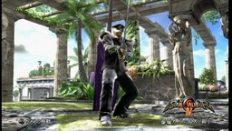
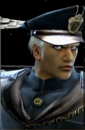
私にとって『超人ロック』でロックに次いで印象ぶかいヒーローは、銀河帝国初代皇帝ナガトである。そのエピソードは銀河コンピューターに関連するのだが、それって『涼宮ハルヒの憂鬱』に出てきた長門有希の設定を連想させる。…不思議なリンクがある。これを統合失調症時に影響を受け、たまたま最近全巻読みした『フルーツバスケット』のキャラ、由希に関連させ、この名前にした。(12文字の制限だと英語名は Nagat までしか入らない…、が、これは蛇神を連想させるな…。) エスパー軍人としての皇帝…詰襟などを着せたい。学生服がいいのではないか。むしろ帝国の軍服を元型とするのが学生服なのだ。そして、バビル２世がいつも着ていたのも、超人ロックとイメージを分かつようで、ちょうど良い。…と考えてこのようなキャラにした。 流派は性別をはじめて一致させ、御剣にした。とても渋い感じに仕上ったと思う。 ■参考 ●《ソウルキャリバ−４ カスタムキャラ: ぶるのば》。上で「あるブログ」と書いたサイト。このサイトは他にもフレンド対戦等などもまじえたキャラクリの成果を残してくれている。 ●《ソウルキャリバー4攻略情報＠ウィキ》。装備パーツ一覧がなぜか見えないが、そこを編集するための URL を入力すれば、データは見える。ここにはキャラクリ画像掲示板へのリンクもある。 更新：2010-10-31 初公開：2010年10月31日 11:48:08 最新版：2010年11月01日 00:36:43
Trackbacks: 《ソウルキャリバー４ キャラクリ 懐かしキャラ 編》 from JRF の私見：雑記 先のバビル２世 編に続き、『ソウルキャリバー４』のキャラクタークリエイション(略してキャラクリ)で、アニメ・マンガ・特撮キャラを私なりに翻案してみた。今度は、姿がはっきりして写しやすいのが多いので、元の雰囲気がかなり出てるものもあると思う。... 受信： 2010-11-01 01:08:10 (JST) 《エヴァンゲリオン 綾波レイのグッズ 画像》 from 綾波レイのフィギュア・画像・壁紙 エヴァンゲリオン 綾波レイのグッズ 画像わたしが守るから キャラクターグッズデコレーションメタルシート 綾波レイ エヴァンゲリオンのヒロイン綾波レイのグッズを紹介しています。 １０年以上経過しても色あせないエヴァの魅力と、個性豊かなキャラクターが大人気ですね。 パチンコやパチスロでもエヴァンゲリオンがフィーチャーされていて、人気が伺えます。 新世紀エヴァンゲリオン 特別総集編 2007年 10月号 綾波レイがＵＳＢになってあなたのパ..... 受信： 2010-12-01 17:05:25 (JST) Comments: [E:rain] 更新：意味不明になっているところを、少し改めた。あいかわらずかもしれないが…。 投稿: JRF | 2010-11-01 00:40:45 (JST) [E:snow] 2012年2月にソウルキャリバー５が発売され、この記事に訪れる人も増えています。以前より「キャラクリ レシピ」で検索してくる方もいたので、SC5 発売記念ということで「レシピ」、つまり、キャラクタークリエーションのパラメータ画面も、公開することにしました。 こちらになります→ JRF_SC4_20120208.zip なお、ソウルキャリバー４はバンダイナムコゲームズ(NBGI)の2008年発売の著作物です。私自身は「レシピ」を同人で売れたりしたらいいのになぁ…即売会とかのお祭りにゲーム機とディスプレイを持ちこんで遊べないかなぁ…とか夢想してたのですが、まぁ、需要もそれほどないようですし、とりあえず公開したほうが愛着を持ってもらえるかと考え、無料で公開することにしました。ネットで公開した以上、NBGI がどういうかはわかりませんが、基本的に私としては自由に使っていただいてかまいません。 とはいえ、同人活動への色気は残しておきたいので、ダウンロード数がカウントできる SugarSync に置いています。そこに別サイトからリンクするのはいつでもこちらがリンクを切れるのでいいのですが、別サイトにアーカイブを置いての配布は、私か NBGI がいいと言わない限りやめていただくようお願いします。(私の公開自体が同人誌な勝手な公開ですので、NBGI の明示の許諾さえあれば、私は文句をいいません。) (記事ではなくコメントで書いたのは、記事のあとに PC が変わってるので、私の記事投稿システムだと更新に不安があったからです。orz) 投稿: JRF | 2012-02-08 20:52:40 (JST)
Links: 先のポセイドン: http://jrf.cocolog-nifty.com/column/2009/11/post.html あるブログ: http://bluenova.cocolog-nifty.com/blog/2008/10/post-898c.html (hbm) ソウルキャリバー４: http://www.soularchive.jp/SC4/ (hbm) バビル２世: http://www.toei-anim.co.jp/lineup/tv/babil2/ (hbm) 統合失調症: http://jrf.cocolog-nifty.com/column/cat2946417/index.html ∀ガンダム: http://www.gundam.info/content/466 (hbm) 新世紀エヴァンゲリオン: http://www.gainax.co.jp/anime/eva/index.html (hbm) ストライクウィッチーズ: http://s-witch.cute.or.jp/ けっこう仮面: http://www.amazon.co.jp/dp/4845828065 超人ロック: http://www.denkaba.com/works_locke.html (hbm) 涼宮ハルヒの憂鬱: http://www.kyotoanimation.co.jp/haruhi/ (hbm) フルーツバスケット: http://www.hakusensha.co.jp/furuba/ (hbm) ソウルキャリバ−４ カスタムキャラ: ぶるのば: http://bluenova.cocolog-nifty.com/blog/2008/10/post-898c.html (hbm) ソウルキャリバー4攻略情報＠ウィキ: http://www31.atwiki.jp/soul_calibur4/pages/1.html (hbm) JRF_SC4_20120208.zip: https://www.sugarsync.com/pf/D252372_79_7677794300
後方参照 (4 件)
- URL参照 Raphael Patai 著『The Hebrew… 2016年05月23日
- URL参照 統合失調症のときに妄想した。「真の創造主」の他に自分が創造主だと「勘違い」してい… 2015年09月11日
- URL参照 近況。甥達が来て帰った。3DS『ガルモ』をネットプレイ中。 2013年08月27日
- URL参照 アルバン・ベルク四重奏団『ドビュッシー＆ラヴェル：弦楽四重奏曲… 2010年11月06日